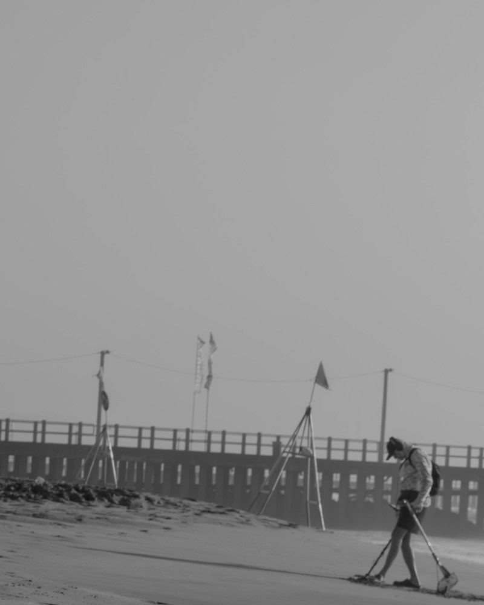

About Shutterhaus
Behind
the lens.
Independent photography from Gauteng. Real connection, careful light, meaningful photographs.
Let’s work together
Founder / Photographer
Alwin Newman.
I’m Alwin, a photographer based in Kempton Park, Gauteng. I shoot portraits, couples, families and social content on location — at your home, a park, a city edge, wherever the photograph wants to be made.
I’ll help you choose a location and clothing, and guide you through the shoot. You don’t need to know how to pose. Most people arrive convinced they’re awkward in front of a camera; most people leave with a gallery they keep coming back to.
Sessions are available mornings and weekends, by appointment. Every package includes a private online gallery and high-resolution files worth printing.
- Based in
- Kempton Park, Gauteng — on location across the province, 25 km of travel included
- Working since
- 2019, independently as Shutterhaus Visuals
- Sessions
- Portraits, couples, families, social content — from a 30-minute headshot to a 90-minute full gallery
- Availability
- Mornings and weekends, by appointment
- Delivery
- Private online gallery, 7–14 days; high-resolution files included
How I work
Natural.
Unforced moments, true to the person. Direction when it helps, patience when it doesn’t.
Honest.
Careful, respectful photography. Clear pricing, clear terms, no surprises after the shoot.
Timeless.
Images edited to outlast trends — photographs that still feel important years from now.